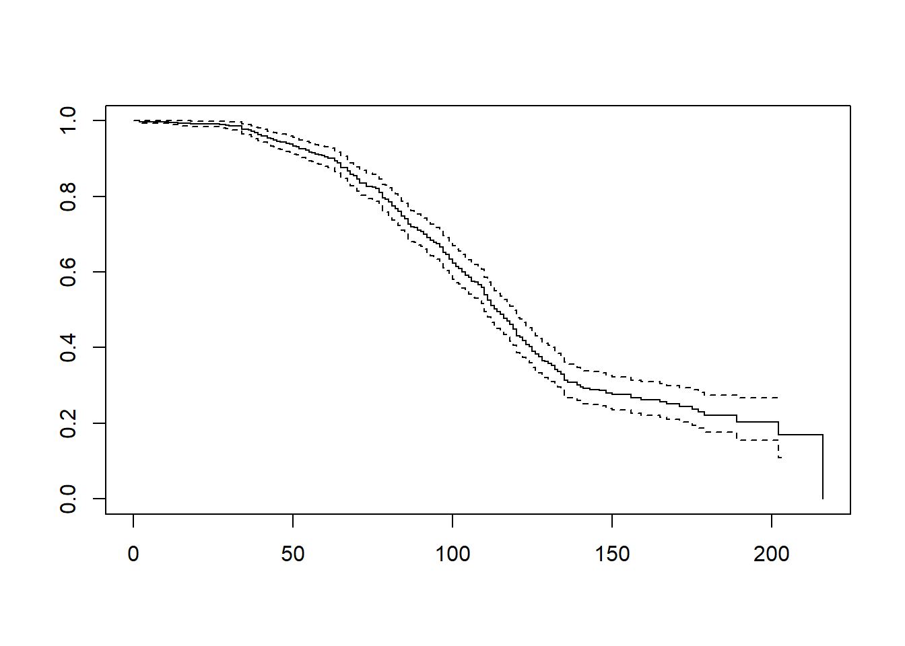
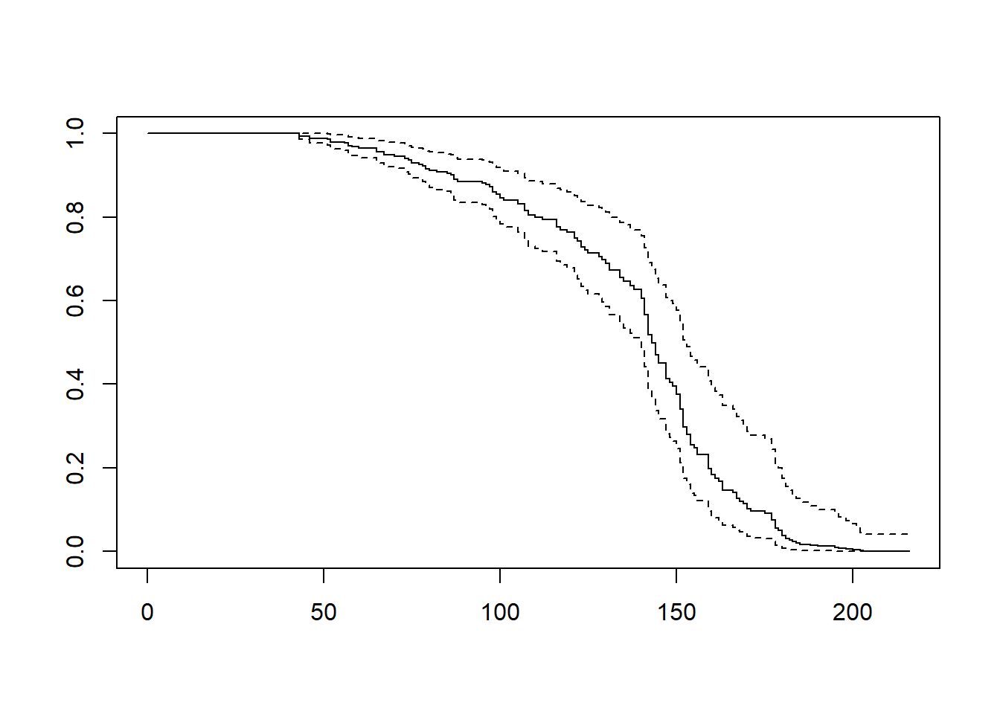
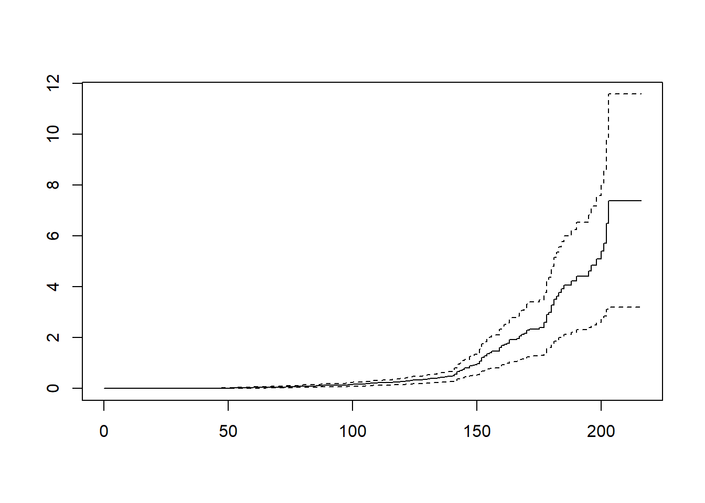

Warning: Using `size` aesthetic for lines was deprecated in ggplot2 3.4.0.
ℹ Please use `linewidth` instead.
L’analyse de survie est une branche de la statistique qui étudie le Temps qu’une unité statistique (individu, machine, entreprise, un employé, une franchise…) passe dans un état donné. L’analyse de survie doit son nom à ses premières applications concernant l’analyse de la durée de vie des individus en épidémiologie et en médecine (patients, malades…). L’analyse de survie s’applique de nos jours à presque tous les domaines: marketing, finance, comptabilité, économie, ingénierie…
Exemples
Temps qu’un client reste abonné à un service offert par une entreprise (avant résiliation du contrat)
Temps qu’un employé au service de l’entreprise (avant licenciement ou avant de quitter l’emploi)
Temps qu’une entreprise demeure en opération sur le marché (avant de faire faillite)
Temps qu’un client demeure solvable (avant de déclarer faillite)
Temps qu’une machine demeure fonctionnelle (avant de tomber en panne)
Temps qu’une économie reste en croissance (avant la récession ou un crash boursier)
L’analyse de survie est utilisée pour les données longitudinales qui rapportent (relatent) l’occurrence ou l’apparition d’un événement.
Qu’est ce qu’un événement?
Un événement est un changement qualitatif ou quantitatif qui survient dans le temps.
Qualitatif:
Changement d’un statut: faillite, divorce, mariage, le fait d’avoir un enfant, l’interruption d’un contrat, promotion…
Quantitatif:
Un changement soudain et significatif (plus important que les variations observées habituellement):
-Crash boursier définit par une baisse de plus de 20% des indices boursiers.
-Un enrichissement: une augmentation de plus de 50% du revenu. Dans ce cas la définition de l’événement est très arbitraire.
On s’intéresse au TEMPS qu’un individu passe dans un état donné. On observe chaque individu à partir du moment où il entre dans l’état jusqu’à ce que l’une des deux situations suivantes survient:
L’individu quitte l’état avant la fin de l’observation ( exemple: entreprise fait faillite)
L’étude se termine et l’individu est toujours dans l’état (exemple: entreprise encore en opération)
NB: le début de l’état n’est pas nécessairement le même pour chaque individu mais il faut s’assurer que les critères utilisés pour définir le début et la fin d’un état soient les mêmes pour tous. Exemple: Si on étudie la durée de vie des entreprises avant la faillite, il faut définir à quel moment une entreprise nait et à quel moment elle meurt (lorsqu’elle déclare faillite ou lorsque la faillite est approuvée légalement?).
On notera par Temps, la variable «temps de survie» dans l’état. Pour chaque individu, la variable «Temps» est soit non censurée ou censurée.
Le temps est non censuré: si l’individu a quitté l’état avant la fin de l’observation. Dans ce cas, on observele vrai temps passé dans l’état.
Le temps est censuré: si l’individu est toujours dans l’état à la fin de l’observation. Dans ce cas, on n’observe qu’une borne inférieure du temps passé dans l’état. On notera par Censure, la variable qui indique si temps est censuré ou non.
Bien que la variable «Temps de survie» soit quantitative, le modèle de régression linéaire n’est pas adéquat pour comprendre les facteurs qui influencent le temps de survie des clients.
Le problème vient du fait que nous n’observons qu’une borne inférieure du temps de survie des données censurées.
Éliminer ces observations (les données censurées) de l’échantillon biaiserait le résultat et sous-estimerait le temps de survie des clients.
Warning: Using `size` aesthetic for lines was deprecated in ggplot2 3.4.0.
ℹ Please use `linewidth` instead.
Netflix s’intéresse aux facteurs influençant le temps qu’un client reste abonné à son service de vidéos en ligne et en streaming. Les données d’un échantillon de 500 clients se trouvent dans le fichier «Netflix.sav». Certains clients sont encore abonnés et d’autres ont déjà quitté.
Variables
| Nom_Variable | Description |
|---|---|
| Temps | Durée en semaines de l’abonnement. Temps réel si le client a quitté, temps censuré sinon. |
| Censure | Indique si l’observation est censurée (1 = client encore abonné, 0 = client a quitté). |
| Age | Âge du client au début de l’abonnement. |
| Sexe | Sexe du client (0 = Homme, 1 = Femme). |
| Région | Région de résidence actuelle du client (valeurs possibles : 1 à 5). |
# Définir le répertoire de travail où se trouve le fichier de données
setwd("C:/Users/Fatou/OneDrive - HEC Montréal/PROJET SUPERVISE/Data")
# Importer le jeu de données
netflix <- read.csv("Netflix.csv", sep = ";", header = TRUE)
# Reconvertir les variables
netflix$censure <- as.integer(netflix$censure)
netflix$sexe <- as.factor(netflix$sexe)
netflix$region <- as.factor(netflix$region)# Charger le package dplyr
library(dplyr)
# Calculer les statistiques descriptives de la variable Temps en fonction de la variable Censure
stat_descriptive_temps <- netflix %>%
group_by(censure) %>%
summarise(
N = n(),
Moyenne = round(mean(Temps, na.rm = TRUE), 2),
Mediane = round(median(Temps, na.rm = TRUE), 2),
Ecart_type = round(sd(Temps, na.rm = TRUE), 3),
Minimum = min(Temps, na.rm = TRUE),
Maximum = max(Temps, na.rm = TRUE)
)
stat_descriptive_temps# A tibble: 2 × 7
censure N Moyenne Mediane Ecart_type Minimum Maximum
<int> <int> <dbl> <dbl> <dbl> <int> <int>
1 0 334 96.2 98 33.8 2 216
2 1 166 131. 142 41.4 43 203334 clients parmi les 500 ne sont plus abonnés. Seulement 166 clients sont encore abonnés.
La moyenne de 131.18 semaines d’abonnement (pour les clients actuels) n’est pas représentative car elle désigne la durée moyenne minimale de l’abonnement de ces clients.
La moyenne de 96.16 semaines (pour les clients ayant rompu l’abonnement) n’est pas non plus représentative car ces clients ne forment pas un échantillon représentatif de la clientèle de l’entreprise.
En analyse de survie, un aspect aussi simple que l’estimation de la moyenne devient très difficile.
La médiane est beaucoup plus représentative du comportement de la variable Temps dans ce contexte d’analyse.
50% des clients qui ont quitté (censure=0) s’abonnent à moins de 98 semaines chez Netflix.
50% des clients qui n’ont pas encore quitté (censure=1) ont un abonnement d’au moins 142 semaines.
On peut utiliser l’analyse de survie pour :
Estimer le temps de survie dans un état donné.
Déterminer les variables qui influencent le temps de survie.
Prévoir le moment où l’individu va quitter cet état (complexe).
Il existe trois approches pour analyser les données de survie:
L’approche non paramétrique : Tables de survie et Kaplan-Meier
L’approche semi-paramétrique : Modèle à risques proportionnels de Cox.
L’approche paramétrique: Modèle de Weibull, log-normal, Gamma
Nous nous limiterons aux deux premières méthodes dans le cadre de ce cours.
Rappel
Soit T une variable aléatoire représentant la durée de vie d’un individu. T désigne le temps passé dans cet état. En statistique, 2 fonctions sont utilisées pour décrire le comportement d’une variable aléatoire, soit sa fonction de densité et sa fonction de répartition.
La fonction de densité: 𝒇( 𝒕) = 𝑷(𝑻 = 𝒕) : 𝒍𝒂 𝒑𝒓𝒐𝒃𝒂𝒃𝒊𝒍𝒊𝒕é 𝒅𝒆 𝒎𝒐𝒖𝒓𝒊𝒓 à 𝒍′𝒊𝒏𝒔𝒕𝒂𝒏𝒕 𝒕.
La fonction de répartition: F (𝒕) = 𝑷(𝑻 ≤ 𝒕) : 𝒍𝒂 𝒑𝒓𝒐𝒃𝒂𝒃𝒊𝒍𝒊𝒕é 𝒅𝒆 𝒎𝒐𝒖𝒓𝒊𝒓 à 𝒍′𝒊𝒏𝒔𝒕𝒂𝒏𝒕 𝒕 𝒐𝒖 𝒂𝒗𝒂𝒏𝒕.
En analyse de survie, les deux fonctions vues précédemment sont un peu modifiées.
La probabilité que le temps de survie soit supérieur ou égal à t.
La probabilité de mourir à l’instant t, sachant que la personne a été vivante jusqu’à cet instant
C’est la fonction de risque qui sera modélisée avec le modèle de régression de Cox qu’on abordera plus loin.
En régression logistique, on modélise un Logit.
En analyse de survie, on modélise une fonction de risque.
L’estimation de la fonction de survie est très utile pour:
Effectuer une analyse descriptive préliminaire pour comprendre le comportement du temps de survie.
Évaluer l’adéquation de certains modèles de régression.
Comparer différents groupes de l’échantillon.
Estimer certains indicateurs d’intérêts comme la médiane ou la moyenne
La méthode actuarielle est une méthode descriptive. Les tables de survie regroupent les observations de l’échantillon par intervalle de valeurs (le choix des intervalles est arbitraire).
Cette méthode est utilisée lorsque la taille de l’échantillon est grande et la mesure du temps de survie est rudimentaire (pas précise).
Cette méthode est utile pour comprendre les concepts de fonction de survie et de risque.
Cette méthode permet également de comparer les indicateurs de survie de plusieurs groupes.
Warning: le package 'survival' a été compilé avec la version R 4.4.3# Créer un objet de survie
objet_survie1 <- Surv(time = netflix$Temps, event = 1-netflix$censure)
# Ajuster le modèle de survie sur aucune variable
fit_km1 <- survfit(objet_survie1 ~ 1)
# Regrouper le temps en 20 unités
intervalle <- seq(0, max(netflix$Temps, na.rm = TRUE), by = 20)# Résume du modèle de survie
summary(fit_km1, times = intervalle)Call: survfit(formula = objet_survie1 ~ 1)
time n.risk n.event survival std.err lower 95% CI upper 95% CI
0 500 0 1.000 0.00000 1.000 1.000
20 496 4 0.992 0.00398 0.984 1.000
40 482 16 0.960 0.00876 0.943 0.977
60 443 27 0.905 0.01313 0.880 0.932
80 372 58 0.785 0.01866 0.749 0.822
100 284 74 0.623 0.02234 0.581 0.669
120 187 83 0.430 0.02344 0.387 0.479
140 111 53 0.295 0.02229 0.254 0.342
160 53 9 0.262 0.02244 0.222 0.310
180 23 6 0.221 0.02470 0.177 0.275
200 8 1 0.204 0.02803 0.156 0.267La plus importante perte de clients survient approximativement durant la deuxième année du contrat (60 et 120 semaines). Une attention particulière doit être accordée aux abonnés à ce moment là. Des actions de rétention peuvent être mises en place durant la deuxième année d’bonnement (promotion, fidélisation, évaluation du niveau de la satisfaction…
Time : les points temporels sur la courbe.
N.risk : le nombre de sujets à risque au temps t-0
N.events : le nombre cumulé d’événements survenus depuis le dernier temps répertorié jusqu’au temps t+0.
Survival : la probabilité de survie estimée à chaque instant.
Standard error : l’erreur standard de la valeur de survie.
Lower 95% CI : la borne inférieure de l’intervalle de confiance à 95 % pour la courbe.
Upper 95% CI : la borne supérieure de l’intervalle de confiance à 95 % pour la courbe.
# Afficher la courbe de survie Kaplan-Meier
plot(fit_km1)
Ce graphique suggère quelques faits intéressants à propos de la variable aléatoire Temps:
Une proportion négligeable de clients mettent fin à leur contrat durant la première année de l’abonnement.
Le churn (le fait de rompre le contrat) est plus important durant la deuxième année.
Cependant, les clients qui ne quittent pas durant les 120-150 semaines semblent être très fidèles par la suite.
# Ajuster le modèle en fonction du sexe
fit_km_sexe <- survfit(objet_survie1 ~ netflix$sexe)
# Résumer le modèle de survie
summary(fit_km_sexe, times = intervalle)Call: survfit(formula = objet_survie1 ~ netflix$sexe)
netflix$sexe=0
time n.risk n.event survival std.err lower 95% CI upper 95% CI
0 309 0 1.000 0.00000 1.0000 1.000
20 307 2 0.994 0.00456 0.9846 1.000
40 294 15 0.945 0.01297 0.9199 0.971
60 262 22 0.873 0.01904 0.8362 0.911
80 210 41 0.733 0.02564 0.6842 0.785
100 157 47 0.564 0.02926 0.5097 0.625
120 101 46 0.385 0.02963 0.3311 0.448
140 50 36 0.230 0.02675 0.1833 0.289
160 20 5 0.195 0.02727 0.1482 0.256
180 8 1 0.181 0.02866 0.1327 0.247
200 3 1 0.151 0.03645 0.0939 0.242
netflix$sexe=1
time n.risk n.event survival std.err lower 95% CI upper 95% CI
0 191 0 1.000 0.00000 1.000 1.000
20 189 2 0.990 0.00737 0.975 1.000
40 188 1 0.984 0.00900 0.967 1.000
60 181 5 0.958 0.01453 0.930 0.987
80 162 17 0.867 0.02481 0.820 0.917
100 127 27 0.717 0.03334 0.654 0.785
120 86 37 0.501 0.03776 0.432 0.581
140 61 17 0.393 0.03769 0.325 0.474
160 33 4 0.359 0.03804 0.292 0.442
180 15 5 0.285 0.04273 0.212 0.382
200 5 0 0.285 0.04273 0.212 0.382# Afficher la courbe de survie Kaplan-Meier
plot(fit_km_sexe)
La courbe de survie des femmes (sexe=1) est en tout point supérieure à celle des hommes (sexe=0).
La probabilité qu’une femme reste abonnée à plus de 140 semaines est plus grande que celle des hommes.
Le test d’égalité des fonctions de survie se base sur les hypothèses suivantes:
H₀ : S fₑₘₘₑ(t)= S hₒₘₘₑ(t)
H₁ : S fₑₘₘₑ(t) ≠ S hₒₘₘₑ(t)
R retourne le résultat du test de Log-Rank
Dans ce contexte, on rejette H₀ et on conclut que la fonction de survie des femmes est significativement différente de celle des hommes.
Ce test peut servir à tester simultanément plus de deux fonctions de survie
# Comparer les courbes de survie selon le sexe avec le test de Wilcoxon
survdiff(objet_survie1 ~ netflix$sexe)Call:
survdiff(formula = objet_survie1 ~ netflix$sexe)
N Observed Expected (O-E)^2/E (O-E)^2/V
netflix$sexe=0 309 217 181 7.33 16.4
netflix$sexe=1 191 117 153 8.63 16.4
Chisq= 16.4 on 1 degrees of freedom, p= 5e-05 Retrouver les courbes de survie des différentes régions.
Tester l’égalité des fonctions de survie entre les régions (test simultané et tests deux par deux).
Commenter les résultats.
L’estimateur de Kaplan-Meier est la méthode d’estimation d’une fonction de survie la plus utilisée.
Cette méthode permet d’estimer la fonction de survie sans devoir regrouper les observations par intervalles.
KM est la méthode à privilégier si le temps de survie est mesuré avec précision et/ou le nombre d’observations est faible.
C’est une méthodes d’estimation non paramétrique, dans le sens où on ne suppose pas que le temps de survie suit une loi en particulier.
Si l’échantillon ne contient aucune censure( uniquement les temps exact sont observés), l’estimateur KM donne la proportion des observations qui possède un temps de survie supérieur à un t (temps) donné.
s’il y a une censure l’estimateur de KM va ajuster les outputs en tenant compte de la censure.
L’estimateur KM est donné par :
\[ \hat{S}(T) = \prod_{i: t_i < t} \left( 1 - \frac{d_i}{n_i} \right) = \left( 1 - \frac{d_1}{n_1} \right) \times \left( 1 - \frac{d_2}{n_2} \right) \times \dots \]
dᵢ: le nombre d’individus qui quittent l’état (résilient le contrat ) au temps tᵢ .
nᵢ: le nombre d’individus à risque au temps tᵢ (l’idée est semblable aux tables de survie).
(1-dᵢ /nᵢ): la probabilité conditionnelle de rester dans l’état un temps supérieur à tᵢ, étant donné qu’on s’est rendu jusque là.
# Créer un objet de survie
objet_survie2 <- Surv(time = netflix$Temps, event = 1 - netflix$censure)
# Ajuster le modèle de survie sans variable explicative
fit_km2 <- survfit(objet_survie2 ~ 1)# Résumer le modèle de survie
summary(fit_km2)Call: survfit(formula = objet_survie2 ~ 1)
time n.risk n.event survival std.err lower 95% CI upper 95% CI
2 500 1 0.998 0.00200 0.994 1.000
11 499 1 0.996 0.00282 0.990 1.000
14 498 1 0.994 0.00345 0.987 1.000
18 497 1 0.992 0.00398 0.984 1.000
27 496 1 0.990 0.00445 0.981 0.999
29 495 1 0.988 0.00487 0.979 0.998
30 494 1 0.986 0.00525 0.976 0.996
34 493 4 0.978 0.00656 0.965 0.991
36 489 1 0.976 0.00684 0.963 0.990
37 488 2 0.972 0.00738 0.958 0.987
38 486 2 0.968 0.00787 0.953 0.984
39 484 2 0.964 0.00833 0.948 0.980
40 482 2 0.960 0.00876 0.943 0.977
42 480 3 0.954 0.00937 0.936 0.973
43 477 1 0.952 0.00956 0.933 0.971
44 474 1 0.950 0.00975 0.931 0.969
45 473 2 0.946 0.01011 0.926 0.966
46 471 1 0.944 0.01029 0.924 0.964
48 468 2 0.940 0.01063 0.919 0.961
49 466 1 0.938 0.01080 0.917 0.959
50 465 2 0.934 0.01112 0.912 0.956
51 463 1 0.932 0.01128 0.910 0.954
52 461 3 0.926 0.01174 0.903 0.949
54 456 2 0.922 0.01203 0.898 0.946
55 454 2 0.918 0.01232 0.894 0.942
56 452 1 0.916 0.01246 0.892 0.940
57 450 2 0.912 0.01273 0.887 0.937
58 446 1 0.910 0.01286 0.885 0.935
59 444 1 0.907 0.01300 0.882 0.933
60 443 1 0.905 0.01313 0.880 0.932
61 441 2 0.901 0.01339 0.875 0.928
63 439 4 0.893 0.01388 0.866 0.921
64 435 2 0.889 0.01412 0.862 0.917
65 433 6 0.877 0.01479 0.848 0.906
67 424 5 0.866 0.01532 0.837 0.897
68 417 4 0.858 0.01573 0.828 0.889
69 413 2 0.854 0.01592 0.823 0.886
70 411 4 0.846 0.01630 0.814 0.878
71 406 5 0.835 0.01675 0.803 0.869
73 401 4 0.827 0.01710 0.794 0.861
75 394 1 0.825 0.01718 0.792 0.859
76 391 2 0.821 0.01735 0.787 0.855
77 389 5 0.810 0.01776 0.776 0.846
78 383 7 0.795 0.01829 0.760 0.832
79 375 1 0.793 0.01837 0.758 0.830
80 372 4 0.785 0.01866 0.749 0.822
81 367 5 0.774 0.01900 0.737 0.812
82 362 3 0.767 0.01920 0.731 0.806
83 358 3 0.761 0.01940 0.724 0.800
84 355 6 0.748 0.01977 0.710 0.788
85 349 3 0.742 0.01994 0.704 0.782
86 345 7 0.727 0.02033 0.688 0.768
87 337 3 0.720 0.02049 0.681 0.761
88 331 1 0.718 0.02055 0.679 0.759
89 329 3 0.711 0.02070 0.672 0.753
90 326 2 0.707 0.02081 0.667 0.749
91 324 3 0.701 0.02095 0.661 0.743
92 321 4 0.692 0.02114 0.652 0.735
93 317 4 0.683 0.02132 0.643 0.726
94 313 2 0.679 0.02141 0.638 0.722
95 311 2 0.674 0.02149 0.634 0.718
96 308 4 0.666 0.02165 0.624 0.709
97 303 6 0.652 0.02188 0.611 0.697
98 296 3 0.646 0.02199 0.604 0.690
99 290 5 0.635 0.02217 0.593 0.680
100 284 5 0.623 0.02234 0.581 0.669
101 277 4 0.614 0.02246 0.572 0.660
102 272 2 0.610 0.02252 0.567 0.656
103 270 4 0.601 0.02264 0.558 0.647
104 266 4 0.592 0.02274 0.549 0.638
105 262 3 0.585 0.02282 0.542 0.632
106 257 4 0.576 0.02291 0.533 0.623
107 253 1 0.574 0.02293 0.531 0.620
108 249 3 0.567 0.02300 0.523 0.614
109 244 3 0.560 0.02307 0.516 0.607
110 241 9 0.539 0.02324 0.495 0.586
111 231 6 0.525 0.02333 0.481 0.573
112 225 6 0.511 0.02339 0.467 0.559
113 218 4 0.502 0.02343 0.458 0.550
114 214 3 0.495 0.02345 0.451 0.543
115 211 3 0.488 0.02346 0.444 0.536
116 208 4 0.478 0.02348 0.434 0.526
117 201 3 0.471 0.02349 0.427 0.519
118 197 4 0.461 0.02349 0.418 0.510
119 193 5 0.449 0.02348 0.406 0.498
120 187 8 0.430 0.02344 0.387 0.479
121 179 1 0.428 0.02343 0.384 0.476
122 176 4 0.418 0.02340 0.375 0.467
123 171 4 0.408 0.02336 0.365 0.457
124 165 2 0.403 0.02334 0.360 0.452
125 162 5 0.391 0.02327 0.348 0.439
126 156 3 0.383 0.02322 0.341 0.432
127 153 3 0.376 0.02317 0.333 0.424
128 150 4 0.366 0.02309 0.323 0.414
129 145 1 0.363 0.02307 0.321 0.412
130 143 2 0.358 0.02302 0.316 0.406
131 140 2 0.353 0.02298 0.311 0.401
132 136 4 0.343 0.02288 0.301 0.391
133 132 2 0.338 0.02283 0.296 0.385
134 130 3 0.330 0.02274 0.288 0.378
135 125 6 0.314 0.02255 0.273 0.361
136 118 2 0.309 0.02248 0.268 0.356
139 114 3 0.301 0.02237 0.260 0.348
140 111 2 0.295 0.02229 0.254 0.342
141 107 1 0.292 0.02225 0.252 0.339
143 97 1 0.289 0.02223 0.249 0.336
146 89 1 0.286 0.02221 0.246 0.333
148 84 2 0.279 0.02220 0.239 0.326
150 80 1 0.276 0.02219 0.236 0.323
156 62 2 0.267 0.02235 0.226 0.314
159 58 1 0.262 0.02244 0.222 0.310
165 46 1 0.257 0.02266 0.216 0.305
167 44 1 0.251 0.02288 0.210 0.300
171 37 1 0.244 0.02325 0.202 0.294
175 35 1 0.237 0.02361 0.195 0.288
177 33 1 0.230 0.02396 0.187 0.282
179 25 1 0.221 0.02470 0.177 0.275
189 13 1 0.204 0.02803 0.156 0.267
202 6 1 0.170 0.03880 0.108 0.266
216 2 2 0.000 NaN NA NAExercice
Calculer la probabilité de survivre plus de 30 semaines.
# Calculer la probabilité de survie au-delà de 30 semaines
summary(fit_km2, times = 30)Call: survfit(formula = objet_survie2 ~ 1)
time n.risk n.event survival std.err lower 95% CI upper 95% CI
30 494 7 0.986 0.00525 0.976 0.996Réponse
Les individus à risque de quitter à ce moment = 493 = 500-n.event=500-7 (ils n’ont pas quitté ni n’ont été censurés).
7 individus ont quitté à moins de 30 semaines d’abonnement.
S(30)= (1-1/499)(1-1/498)(1-1/497)(1-1/496)(1-1/495)(1-1/494)(1-1/493)=1-7/493= 0.98597
# Afficher la courbe de survie de Kaplan-Meier
plot(fit_km2)
# Renvoie les temps où la survie atteint 75%, 50% et 25% (Q1, médiane, Q3)
quantile(fit_km2, probs = c(0.25, 0.5, 0.75))$quantile
25 50 75
84 114 171
$lower
25 50 75
80 110 143
$upper
25 50 75
90 119 NA Pour mesurer la tendance centrale de la variable d’intérêt, il est préférable d’utiliser la médiane ou les quartiles. S(171)= 25% S(114)=50% (médiane) S(84)=75%
Exemple: la probabilité de survivre plus de 171 semaines est de 25%.
# On ajuste le modèle de survie sur la variable sexe
fit_km_sexe2 <- survfit(objet_survie2 ~ netflix$sexe)
summary(fit_km_sexe2 )Call: survfit(formula = objet_survie2 ~ netflix$sexe)
netflix$sexe=0
time n.risk n.event survival std.err lower 95% CI upper 95% CI
2 309 1 0.9968 0.00323 0.9905 1.000
11 308 1 0.9935 0.00456 0.9846 1.000
27 307 1 0.9903 0.00558 0.9794 1.000
29 306 1 0.9871 0.00643 0.9745 1.000
34 305 4 0.9741 0.00903 0.9566 0.992
36 301 1 0.9709 0.00957 0.9523 0.990
37 300 2 0.9644 0.01054 0.9440 0.985
38 298 2 0.9579 0.01142 0.9358 0.981
39 296 2 0.9515 0.01223 0.9278 0.976
40 294 2 0.9450 0.01297 0.9199 0.971
42 292 1 0.9417 0.01332 0.9160 0.968
43 291 1 0.9385 0.01367 0.9121 0.966
44 288 1 0.9353 0.01400 0.9082 0.963
45 287 2 0.9287 0.01464 0.9005 0.958
48 284 2 0.9222 0.01525 0.8928 0.953
49 282 1 0.9189 0.01555 0.8890 0.950
50 281 2 0.9124 0.01611 0.8814 0.945
51 279 1 0.9091 0.01638 0.8776 0.942
52 277 3 0.8993 0.01716 0.8663 0.934
54 273 2 0.8927 0.01765 0.8587 0.928
55 271 1 0.8894 0.01789 0.8550 0.925
56 270 1 0.8861 0.01813 0.8513 0.922
57 268 1 0.8828 0.01836 0.8475 0.920
58 265 1 0.8795 0.01859 0.8438 0.917
59 263 1 0.8761 0.01882 0.8400 0.914
60 262 1 0.8728 0.01904 0.8362 0.911
61 260 2 0.8661 0.01948 0.8287 0.905
63 258 2 0.8593 0.01990 0.8212 0.899
64 256 2 0.8526 0.02030 0.8138 0.893
65 254 5 0.8358 0.02124 0.7952 0.879
67 246 4 0.8223 0.02196 0.7803 0.866
68 241 3 0.8120 0.02246 0.7692 0.857
69 238 1 0.8086 0.02263 0.7654 0.854
70 237 4 0.7950 0.02325 0.7507 0.842
71 233 4 0.7813 0.02383 0.7360 0.829
73 229 1 0.7779 0.02397 0.7323 0.826
76 225 2 0.7710 0.02425 0.7249 0.820
77 223 5 0.7537 0.02491 0.7064 0.804
78 217 4 0.7398 0.02540 0.6917 0.791
80 210 2 0.7328 0.02564 0.6842 0.785
81 207 3 0.7221 0.02599 0.6729 0.775
82 204 2 0.7151 0.02622 0.6655 0.768
83 202 3 0.7044 0.02654 0.6543 0.758
84 199 5 0.6867 0.02702 0.6358 0.742
85 194 3 0.6761 0.02729 0.6247 0.732
86 191 3 0.6655 0.02754 0.6136 0.722
87 187 1 0.6619 0.02763 0.6100 0.718
88 184 1 0.6583 0.02771 0.6062 0.715
89 183 3 0.6476 0.02795 0.5950 0.705
90 180 1 0.6440 0.02802 0.5913 0.701
91 179 1 0.6404 0.02809 0.5876 0.698
92 178 3 0.6296 0.02830 0.5765 0.688
93 175 1 0.6260 0.02837 0.5728 0.684
95 174 2 0.6188 0.02850 0.5654 0.677
96 171 3 0.6079 0.02868 0.5542 0.667
97 168 5 0.5898 0.02894 0.5357 0.649
98 163 2 0.5826 0.02904 0.5284 0.642
99 159 2 0.5753 0.02913 0.5209 0.635
100 157 3 0.5643 0.02926 0.5097 0.625
101 152 2 0.5568 0.02934 0.5022 0.617
102 149 1 0.5531 0.02938 0.4984 0.614
103 148 2 0.5456 0.02945 0.4908 0.607
104 146 3 0.5344 0.02955 0.4795 0.596
105 143 1 0.5307 0.02958 0.4758 0.592
106 140 1 0.5269 0.02961 0.4719 0.588
107 139 1 0.5231 0.02964 0.4681 0.585
108 135 2 0.5153 0.02970 0.4603 0.577
109 132 2 0.5075 0.02976 0.4524 0.569
110 130 6 0.4841 0.02988 0.4289 0.546
111 124 2 0.4763 0.02991 0.4212 0.539
112 122 4 0.4607 0.02993 0.4056 0.523
113 117 2 0.4528 0.02993 0.3978 0.515
114 115 1 0.4489 0.02993 0.3939 0.512
115 114 3 0.4371 0.02991 0.3822 0.500
116 111 3 0.4253 0.02987 0.3706 0.488
117 107 2 0.4173 0.02983 0.3627 0.480
118 104 1 0.4133 0.02981 0.3588 0.476
119 103 1 0.4093 0.02979 0.3549 0.472
120 101 6 0.3850 0.02963 0.3311 0.448
121 95 1 0.3809 0.02960 0.3271 0.444
122 92 4 0.3644 0.02944 0.3110 0.427
123 87 3 0.3518 0.02931 0.2988 0.414
124 84 1 0.3476 0.02926 0.2947 0.410
125 82 4 0.3306 0.02903 0.2784 0.393
126 77 2 0.3221 0.02891 0.2701 0.384
127 75 3 0.3092 0.02869 0.2578 0.371
128 72 3 0.2963 0.02844 0.2455 0.358
130 69 2 0.2877 0.02826 0.2373 0.349
131 67 1 0.2834 0.02816 0.2333 0.344
132 65 4 0.2660 0.02775 0.2168 0.326
134 61 2 0.2572 0.02751 0.2086 0.317
135 58 3 0.2439 0.02714 0.1961 0.303
136 54 1 0.2394 0.02701 0.1919 0.299
139 52 2 0.2302 0.02675 0.1833 0.289
143 44 1 0.2250 0.02665 0.1784 0.284
146 41 1 0.2195 0.02656 0.1732 0.278
148 37 1 0.2136 0.02649 0.1675 0.272
156 24 1 0.2047 0.02684 0.1583 0.265
159 21 1 0.1949 0.02727 0.1482 0.256
177 14 1 0.1810 0.02866 0.1327 0.247
189 6 1 0.1508 0.03645 0.0939 0.242
202 2 1 0.0754 0.05636 0.0174 0.326
netflix$sexe=1
time n.risk n.event survival std.err lower 95% CI upper 95% CI
14 191 1 0.995 0.00522 0.985 1.000
18 190 1 0.990 0.00737 0.975 1.000
30 189 1 0.984 0.00900 0.967 1.000
42 188 2 0.974 0.01155 0.951 0.997
46 186 1 0.969 0.01262 0.944 0.994
55 183 1 0.963 0.01362 0.937 0.990
57 182 1 0.958 0.01453 0.930 0.987
63 181 2 0.947 0.01619 0.916 0.980
65 179 1 0.942 0.01694 0.909 0.976
67 178 1 0.937 0.01765 0.903 0.972
68 176 1 0.932 0.01834 0.896 0.968
69 175 1 0.926 0.01899 0.890 0.964
71 173 1 0.921 0.01962 0.883 0.960
73 172 3 0.905 0.02136 0.864 0.948
75 167 1 0.899 0.02190 0.857 0.943
78 166 3 0.883 0.02343 0.838 0.930
79 163 1 0.878 0.02391 0.832 0.926
80 162 2 0.867 0.02481 0.820 0.917
81 160 2 0.856 0.02566 0.807 0.908
82 158 1 0.851 0.02606 0.801 0.903
84 156 1 0.845 0.02646 0.795 0.899
86 154 4 0.823 0.02795 0.770 0.880
87 150 2 0.812 0.02864 0.758 0.870
90 146 1 0.807 0.02898 0.752 0.865
91 145 2 0.796 0.02963 0.740 0.856
92 143 1 0.790 0.02994 0.733 0.851
93 142 3 0.773 0.03082 0.715 0.836
94 139 2 0.762 0.03136 0.703 0.826
96 137 1 0.757 0.03162 0.697 0.821
97 135 1 0.751 0.03188 0.691 0.816
98 133 1 0.745 0.03214 0.685 0.811
99 131 3 0.728 0.03288 0.667 0.796
100 127 2 0.717 0.03334 0.654 0.785
101 125 2 0.705 0.03378 0.642 0.775
102 123 1 0.700 0.03399 0.636 0.769
103 122 2 0.688 0.03439 0.624 0.759
104 120 1 0.682 0.03458 0.618 0.754
105 119 2 0.671 0.03493 0.606 0.743
106 117 3 0.654 0.03542 0.588 0.727
108 114 1 0.648 0.03557 0.582 0.722
109 112 1 0.642 0.03572 0.576 0.716
110 111 3 0.625 0.03613 0.558 0.700
111 107 4 0.601 0.03662 0.534 0.678
112 103 2 0.590 0.03683 0.522 0.667
113 101 2 0.578 0.03702 0.510 0.655
114 99 2 0.566 0.03718 0.498 0.644
116 97 1 0.561 0.03725 0.492 0.639
117 94 1 0.555 0.03733 0.486 0.633
118 93 3 0.537 0.03753 0.468 0.616
119 90 4 0.513 0.03771 0.444 0.592
120 86 2 0.501 0.03776 0.432 0.581
123 84 1 0.495 0.03778 0.426 0.575
124 81 1 0.489 0.03780 0.420 0.569
125 80 1 0.483 0.03782 0.414 0.563
126 79 1 0.477 0.03783 0.408 0.557
128 78 1 0.471 0.03784 0.402 0.551
129 76 1 0.464 0.03784 0.396 0.545
131 73 1 0.458 0.03786 0.390 0.539
133 71 2 0.445 0.03787 0.377 0.526
134 69 1 0.439 0.03787 0.370 0.520
135 67 3 0.419 0.03783 0.351 0.500
136 64 1 0.412 0.03781 0.345 0.494
139 62 1 0.406 0.03778 0.338 0.487
140 61 2 0.393 0.03769 0.325 0.474
141 58 1 0.386 0.03764 0.319 0.467
148 47 1 0.378 0.03773 0.310 0.459
150 45 1 0.369 0.03781 0.302 0.451
156 38 1 0.359 0.03804 0.292 0.442
165 28 1 0.347 0.03879 0.278 0.432
167 27 1 0.334 0.03942 0.265 0.421
171 23 1 0.319 0.04029 0.249 0.409
175 21 1 0.304 0.04114 0.233 0.396
179 16 1 0.285 0.04273 0.212 0.382
216 2 2 0.000 NaN NA NA# Afficher la courbe de survie de Kaplan-Meier
plot(fit_km_sexe2)
quantile(fit_km_sexe2, probs = c(0.25, 0.5, 0.75))$quantile
25 50 75
netflix$sexe=0 78 110 135
netflix$sexe=1 98 123 216
$lower
25 50 75
netflix$sexe=0 71 102 128
netflix$sexe=1 91 114 171
$upper
25 50 75
netflix$sexe=0 84 115 177
netflix$sexe=1 105 136 NAExercice:
Commentez les résultats.
Les hypothèses du test sont identiques à celle énoncées dans le cas des tables de survie.
H₀ : S fₑₘₘₑ(t)= S hₒₘₘₑ(t)
H₁ : S fₑₘₘₑ(t) ≠ S hₒₘₘₑ(t) pour au moins une valeur de t
Log-rank : suppose que le ratio des fonctions de risques des 2 groupes est constant pour toute la période d’intérêt.
Breslow (Wilcoxon): accorde plus de poids aux différences observées dés le début qu’aux différences observées plus loin dans le temps. Il est donc le plus puissant dans un contexte où les différences sont plus prononcées au tout début.
Terone-Ware: plus de poids au début.
On a effectué le test du Log-Rank plus haut. Ici, on s’intéresse au test test de Breslow et celui de Tarone-Ware.
# Test de Breslow
survdiff(objet_survie2 ~ netflix$sexe, rho = 1)Call:
survdiff(formula = objet_survie2 ~ netflix$sexe, rho = 1)
N Observed Expected (O-E)^2/E (O-E)^2/V
netflix$sexe=0 309 145.9 120.2 5.48 17.6
netflix$sexe=1 191 69.4 95.1 6.93 17.6
Chisq= 17.6 on 1 degrees of freedom, p= 3e-05 # Test de Tarone-Ware
survdiff(objet_survie2 ~ netflix$sexe, rho = 0.5)Call:
survdiff(formula = objet_survie2 ~ netflix$sexe, rho = 0.5)
N Observed Expected (O-E)^2/E (O-E)^2/V
netflix$sexe=0 309 175.3 145 6.21 17.3
netflix$sexe=1 191 88.6 119 7.61 17.3
Chisq= 17.3 on 1 degrees of freedom, p= 3e-05 Exercice
Comparer les fonctions de survies des différentes régions. Commentez les résultats.
Le modèle de Cox est un modèle de régression semi-paramétrique, appelé aussi, modèle à risques proportionnels (proportional Hazard model).
Le modèle de Cox permet d’estimer l’effet des variables explicatives sur la variable aléatoire T sans postulat de distribution particulière (sans spécifier une loi de distribution) pour celle celle-ci.
C’est un modèle semi-paramétrique car seulement une partie du modèle doit être spécifiée.
Le modèle de Cox est similaire au modèle de régression logistique mais évalue la relation entre le temps de survie et les variables explicatives.
C’est le modèle le plus utilisé pour analyser les données de survie.
𝒉(𝒕|𝒙₁, 𝒙₂, … , 𝒙ₖ) est la fonction de risque pour les individus ayant les caractéristiques spécifiques (𝒙₁, 𝒙₂, … , 𝒙ₖ).
Le modèle de Cox s’écrit: \[ h(t | x_1, x_2, \dots, x_k) = h_0(t) \times \exp(\beta_1 x_1 + \beta_2 x_2 + \dots + \beta_k x_k) \] est une fonction de risque de base qui n’ a pas besoin d’être spécifié.
La fonction de risque est donc le produit de deux parties distinctes:
une partie sans paramètres, qui dépend uniquement du temps
et une partie avec paramètres qui dépend uniquement des variables explicatives.
Remarques:
Lorsque toutes les variables explicatives prennent la valeur 0, on retrouve 𝒉₀ 𝒕 (cette valeur est équivalente à « l’ordonnée à l’origine en régression linéaire »).
ex p(β₁x₁ + β₂x₂ + … + βₖxₖ modélise l’effet d’un changement des valeurs des variables explicatives sur la fonction de risque de base”)
Si on compare le ratio des risques de deux individus ayant les mêmes valeurs pour les variables explicatives, à l’exception de la variable x1, qui diffère d’une unité, on obtient ce qui suit:
\[ \frac{h(t | x_1 + 1, x_2, \dots, x_k)}{h(t | x_1, x_2, \dots, x_k)} = \frac{h_0(t) \exp\left(\beta_1 (x_1 + 1) + \beta_2 x_2 + \dots + \beta_k x_k \right)}{h_0(t) \exp\left(\beta_1 x_1 + \beta_2 x_2 + \dots + \beta_k x_k \right)} = e^{\beta_1} \]
Interprétation de β₁ :
lorsque x1 augmente d’une unité, le risque est multiplié par 𝒆ᵝ¹ (ratio de risque).
Résultats:
Le ratio de risque ne dépend pas du temps.
Le ratio de risque est constant par rapport au temps. (l’effet de la variable explicative est stable dans le temps).
# Ajuster le modèle de Cox avec les variables âge, sexe et région
cox <- coxph(Surv(Temps, censure) ~ age + sexe + region, data = netflix, ties = "exact")
# Résumer le modèle de Cox
summary(cox)Call:
coxph(formula = Surv(Temps, censure) ~ age + sexe + region, data = netflix,
ties = "exact")
n= 500, number of events= 166
coef exp(coef) se(coef) z Pr(>|z|)
age -0.04314 0.95778 0.00947 -4.555 5.23e-06 ***
sexe1 -0.48278 0.61706 0.17045 -2.832 0.00462 **
region2 -0.40384 0.66775 0.27041 -1.493 0.13532
region3 -0.04773 0.95339 0.25291 -0.189 0.85031
region4 -0.41091 0.66304 0.25774 -1.594 0.11087
region5 -0.16652 0.84661 0.25633 -0.650 0.51594
---
Signif. codes: 0 '***' 0.001 '**' 0.01 '*' 0.05 '.' 0.1 ' ' 1
exp(coef) exp(-coef) lower .95 upper .95
age 0.9578 1.044 0.9402 0.9757
sexe1 0.6171 1.621 0.4418 0.8618
region2 0.6677 1.498 0.3930 1.1345
region3 0.9534 1.049 0.5808 1.5651
region4 0.6630 1.508 0.4001 1.0988
region5 0.8466 1.181 0.5123 1.3992
Concordance= 0.637 (se = 0.026 )
Likelihood ratio test= 29.62 on 6 df, p=5e-05
Wald test = 27.97 on 6 df, p=1e-04
Score (logrank) test = 28.22 on 6 df, p=9e-05# Afficher la courbe de survie estimée à partir du modèle de Cox
plot(survfit(cox))
# Afficher la fonction de risque cumulée (cumulative hazard)
plot(survfit(cox), fun = "cumhaz")
On estime, toutes choses étant égale par ailleurs (si tout demeure constant):
À tout moment dans le temps, le risque qu’une femme (sexe=1) mette fin à son contrat est exp(-0.519)=0.595 fois le risque d’un homme (le risque est 40.5% inférieur (1-0.595=0.405)).
Pour chaque augmentation d’une année de l’âge lors de l’abonnement, le risque de quitter diminue de 4.3% (exp(-0,043)=0.957) à tout moment dans le temps.
À tout moment dans le temps, le risque qu’un client de la région 2 résilie son contrat est exp(-0.329)=0.729 fois celui de la région 1 (référence).
Exercice
Testez les significativité des paramètres dans le modèle au niveau 5% et interprétez le reste des coefficients estimés.